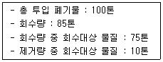
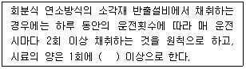
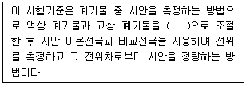
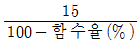
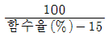
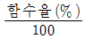
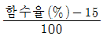
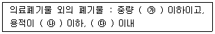

폐기물처리산업기사 (2017-09-23 기출문제)
1과목: 폐기물개론
1. 폐기물 발생량이 2,000m3/일이고, 밀도 840kg/m3일 때, 5톤 트럭으로 운반하려면 1일 필요한 차량수(대)는? (단, 예비차량 2대 포함, 기타 조건은 고려하지 않음)
- 334
- 336
- 338
- 340
(정답률: 78%)

2. 유해폐기물의 평가기준에 해당되지 않는 것은?
- 인화성
- 부식성
- 반응성
- 다발성
(정답률: 77%)
3. 자동화, 무공해화, 안전화 등의 장점은 있으나 장거리 수송이 곤란하거나 잘못 투입된 물건의 회수가 곤란하다는 점 등 때문에 보다 많은 연구가 필요한 새로운 쓰레기 수집·수송 수단으로 가장 적절한 것은?
- Mono－rail 수송
- Conveyor 수송
- Container 철도 수송
- Pipe－line 수송
(정답률: 89%)
4. 폐기물의 물리적 조성을 측정하는 방법 중 수분함량을 측정하는 방법은?
- 습량기준으로 시료를 비례 채취하여 수분함량을 측정한다.
- 건량기준으로 시료를 비례 채취하여 수분함량을 측정한다.
- 재질의 수분흡수능력에 따라 몇 개의 군으로 나누어 수분함량을 각각 측정한 후 습량기준으로 가중평균한다.
- 재질의 수분흡수능력에 따라 몇 개의 군으로 나누어 수분함량을 각각 측정한 후 건량기준으로 가중평균한다.
(정답률: 71%)
5. 쓰레기 발생량 조사방법으로 적절하지 않은 것은?
- 물질수지법(material balance method)
- 적재차량계수분석법(load count analysis)
- 수거트럭 수지법(collection truck balance method)
- 직접계근법(direct weighting method)
(정답률: 83%)
6. 쓰레기를 압축할 때 통상적인 경제적 압축밀도(kg/m3)로 가장 적절한 것은?
- 1,000
- 2,000
- 3,000
- 4,000
(정답률: 84%)
7. 생활쓰레기 수거형태 중 효율이 가장 좋은 방식은?
- 문전수거
- 노변수거
- 타종수거
- 집안이동수거
(정답률: 87%)
8. 폐플라스틱류의 재생방법으로 틀린 것은?
- 용융재생
- 용해재생
- 파쇄재생
- 산화재생
(정답률: 73%)
9. 폐기물을 파쇄하여 균일화 및 세립화하였을 때의 장점이 아닌 것은?
- 불균일한 조성을 가진 폐기물을 서로 혼합할 때 균일화가 용이하게 되어 연소효율을 높이고 변동이 비교적 적은 성상연료를 가능하게 한다.
- 거칠고 큰 폐기물을 파쇄하여 소각하면 조대쓰레기의 의한 소각로의 손상을 방지한다.
- 파쇄하면 Bulk되어 용적이 늘어나므로 운반비는 상승하나, 고밀도 매립이 가능하여 결국 경제적이다.
- 파쇄물질 속에 함유된 고가금속 등을 자선기 등을 사용하여 쉽게 회수할 수 있다.
(정답률: 78%)
10. 폐기물의 70%를 5cm보다 작게 파쇄하고자 할 때 특성 입자 크기(Xo, cm)는? (단, Rosin-Rammler 모델 기준, n=1)
- 약 3.1
- 약 3.8
- 약 4.2
- 약 4.9
(정답률: 62%)
11. 국내 폐기물은 1990년대 초와 1990년대 말의 쓰레기 배출을 조사해보면, 초기의 연탄재에서 말기의 종이류로 질적인 변화가 뚜렷하다. 이에 대한 설명으로 옳지 않은 것은?
- 발열량이 높아졌다.
- 재활용 가능성이 높아졌다.
- 쓰레기의 배출밀도가 커졌다.
- 전체적인 배출량이 감소하였다.
(정답률: 60%)
12. 10,000명이 거주하는 지역에서 한 가구당 20L 종량제봉투가 1주일에 2개씩 발생되고 있다. 한 가구당 2.5명이 거주할 경우 지역에서 발생되는 쓰레기 발생량(L/인·주)은?
- 15.0
- 16.0
- 17.0
- 18.0
(정답률: 76%)
13. 청소상태 만족도 평가를 위한 지역사회 효과지수인 CEI(Community Effects Index)에 관한 설명으로 옳은 것은?
- 적환장 크기와 수거량의 관계로 결정한다.
- 수거방법에 따른 MHT 변화로 측정한다.
- 가로 청소상태를 기준으로 측정한다.
- 일반대중들에 대한 설문조사를 통하여 결정한다.
(정답률: 77%)
14. 폐기물 발생량 예측방법 중 모든 인자를 시간에 함수로 나타낸 후 시간에 대한 함수로 표현된 각 영향인자 간의 상관계수를 수식화하는 것은?
- 상관모사모델
- 시간추정모델
- 동적모사모델
- 다중회귀모델
(정답률: 96%)
15. 폐기물처리계획의 기본요소에 해당되지 않는 것은?
- 간편화
- 안정화
- 무해화
- 감량화
(정답률: 78%)
16. 다음의 경우 Worrell식에 의한 선별효율(%)은?

- 29.41
- 53.8
- 62.5
- 71.4
(정답률: 45%)
17. 쓰레기 소각로 설계의 기준이 되고 있는 발열량은?
- 고위발열량
- 저위발열량
- 총 발열량
- 건식 발열량
(정답률: 92%)
18. 도시 쓰레기 성분 및 혼합물 밀도의 대표값으로 가장 거리가 먼 것은?
- 종이 : 85kg/m3
- 플라스틱 : 150kg/m3
- 고무 : 130kg/m3
- 유리 : 195kg/m3
(정답률: 75%)
19. 와전류 선별기로 주로 분리하는 비철금속에 관한 내용으로 가장 옳은 것은?
- 자성이며 전기전도성이 좋은 금속
- 자성이며 전기전도성이 나쁜 금속
- 비자성이며 전기전도성이 좋은 금속
- 비자성이며 전기전도성이 나쁜 금속
(정답률: 83%)
20. 폐기물의 성상분석 절차로 가장 적합한 것은?
- 건조 → 전처리 → 물리적 조성 → 밀도 측정 → 분류
- 밀도 측정 → 건조 → 전처리 → 분류 → 물리적 조성
- 전처리 → 건조 → 밀도 측정 → 물리적 조성 → 분류
- 밀도 측정 → 물리적 조성 → 건조 → 분류 → 전처리
(정답률: 91%)
2과목: 폐기물처리기술
21. 분뇨처리장에서 분뇨를 소화 후 소화된 슬러지를 탈수하고 있다. 소화된 슬러지의 발생량은 1일 분뇨투입량의 10%이며 소화된 슬러지의 함수량이 95%라면 1일 탈수된 슬러지의 양(m3)은? (단, 슬러지의 비중=1.0, 분뇨투입량=200kL/day, 탈수된 슬러지의 함수율=75%)
- 7
- 6
- 5
- 4
(정답률: 64%)
22. 토양의 현장처리기법인 토양세척법과 관련된 주요 인자와 가장 거리가 먼 것은?
- 헨리상수
- 분배계수
- 투수계수
- 지하수 차단법의 유무
(정답률: 69%)
23. 오염된 지하수의 복원방법에 관한 설명 중 옳지 않은 것은?
- 유해폐기물의 펌프-처리 복원방법은 규제기준이 달성되어 펌핑을 멈출 때 탈착현상이 발생한다.
- 토양증기 추출 시 공기는 지하수면 위에 주입되고, 배출정에서 휘발성 화합물질을 수집한다.
- 토양증기 추출 시 하나의 추출정으로 반지름 10피트 이상의 넓은 영역에 걸쳐 적용 가능하다.
- 생물학적 복원은 굴착, 드럼으로 폐기 등과 비교하여 낮은 비용으로 적용 가능하다.
(정답률: 52%)
24. 도시쓰레기 매립장에서 생산되는 가스 중 초기(호기성 상태)에 가장 많이 발생하는 가스는?
- CO2
- CH4
- NH3
- H2S
(정답률: 75%)
25. 매립지 바닥층이 두껍고 복토로 적합한 지역에 이용하는 매립방법은?
- 도랑법
- 지역법
- 경사법
- 계곡매립법
(정답률: 81%)
26. Rotary Kiln 소각로의 장단점으로 틀린 것은?
- 습식가스 세정시스템과 함께 사용할 수 있는 장점이 있다.
- 비교적 열효율이 낮은 단점이 있다.
- 용융상태의 물질에 의하여 방해를 받는 단점이 있다.
- 폐기물의 체류시간을 노의 회전속도 조절로 제어할 수 있는 장점이 있다.
(정답률: 47%)
27. 슬러지를 건조상으로 탈수할 때 나타나는 장점에 해당하지 않는 사항은?
- 소요부지가 좁다.
- 운전비용이 적게 소요된다.
- 생산된 cake에 수분이 적다.
- 특별한 기술이 필요하지 않다.
(정답률: 59%)
28. 유해폐기물 고화처리방법인 자가시멘트법에 관한 내용으로 틀린 것은?
- 연소가스 탈황 시 발생된 슬러지 처리에 사용됨
- 폐기물이 스스로 고형화되는 성질을 이용하여 개발됨
- 중금속 저지에 효과적이며 혼합률이 낮음
- 숙련된 기술과 보조에너지가 필요 없음
(정답률: 76%)
29. 유해폐기물의 고화처리방법 중 열가소성 플라스틱법의 장·단점으로 틀린 것은?
- 혼합률이 비교적 낮다.
- 폐기물을 건조시켜야 한다.
- 용출손실률이 시멘트 기초법보다 낮다.
- 고온 분해되는 물질에는 사용할 수 없다.
(정답률: 64%)
30. 호기성 처리로 200kL/d의 분뇨를 처리할 경우 처리장에 필요한 송풍량(m3/hr)은? (단, BOD=20,000ppm, 제거율=80%, 제거 BOD당 필요송풍량=100m3/BOD kg, 분뇨 비중=1.0, 24시간 연속 가동 기준)
- 약 3,333
- 약 13,333
- 약 320,000
- 약 400,000
(정답률: 71%)
31. 매립 후 2년이 경과하여 혐기성 단계로 발생되는 가스이 구성비가 거의 일정한 정상상태가 되었을 때 가스구성비(메탄 :이산화탄소)로 가장 적절한 것은?
- 55%：45%
- 65%：35%
- 75%：25%
- 85%：15%
(정답률: 68%)
32. 호기성 퇴비화 공정의 설계 운영 고려 인자에 관한 설명으로 옳지 않은 것은?
- C/N비가 낮으면 암모니아 가스가 발생하며 생물학적 활성이 떨어진다.
- 하수 슬러지는 폐기물과 함께 퇴비화가 가능하며 슬러지를 첨가할 경우 최종 수분함량이 중요한 인자로 작용한다.
- 퇴비 내 공기의 채널링 효과를 유지하기 위해 반응기간 동안 규칙적으로 교반하거나 뒤집어주어야 한다.
- 암모니아 가스에 의한 질소 손실을 줄이기 위해서 pH가 8.5 이상 올라가지 않도록 주의한다.
(정답률: 62%)
33. 합성차수막 중 PVC의 장·단점으로 틀린 것은?
- 강도가 낮다.
- 접합이 용이하다.
- 자외선, 오존, 기후에 약하다.
- 대부분의 유기화학물질에 약하다
(정답률: 77%)
34. 메탄 1Sm3를 공기과잉계수 1.8로 연소시킬 경우, 실제 습윤 연소가스량(Sm3)은?
- 약 18.1
- 약 19.1
- 약 20.1
- 약 21.1
(정답률: 50%)
35. 소각처리에 있어서 생성된 다이옥신의 배출을 최소화할 수 있는 기술로써 보편적으로 활성탄 주입시설과 함께 가장 많이 사용되는 집진설비는?
- 전기 집진기
- 원심력 집진기
- 세정식 집진기
- 백필터 집진기
(정답률: 70%)
36. 분뇨를 소화처리 시 유기물 농도 VS=30,000mg/L, 유기물(분뇨)량 Q=100m3/일, 유기물 부하치 LVS=5kg/m3·일이라면 소화탱크 용량 V(m3)은?
- 60,000
- 6,000
- 600
- 60
(정답률: 68%)
37. pH가 10에서 Cd(OH)2가 침전을 하려면 Cd2+의 농도(M)는 얼마 이상이어야 하는가? (단, Cd(OH)2의 Ksp=10-13.6이다.)
- 10-3.6
- 10-5.6
- 10-9.6
- 10-13.6
(정답률: 54%)
38. 옥탄(C8H18)이 완전 연소되는 경우에 공기연료비(AFR, 무게 기준)는?
- 13kg 공기/kg 연료
- 15kg 공기/kg 연료
- 17kg 공기/kg 연료
- 19kg 공기/kg 연료
(정답률: 50%)
39. 유기성 폐기물의 자원화 방법으로 가장 적당하지 않은 것은?
- 퇴비화
- 유가금속 회수
- 연료화
- 건설자재화
(정답률: 50%)
40. 매립공법에 의한 분류 중 육상 매립방법이 아닌 것은?
- 셀공법(Cell system)
- 도랑형 공법(Trench system)
- 박층공법(Thin layer system)
- 압축매립공법(Baling system)
(정답률: 69%)
3과목: 폐기물 공정시험 기준(방법)
41. 다음 중 온도의 규정에 어긋나는 것은?
- 표준온도는 0℃
- 상온은 15 ~ 25℃
- 실온은 4 ~ 25℃
- 찬 곳은 0 ~ 15℃
(정답률: 86%)
42. 용액의 정의에 대한 설명에서 10W/V%가 의미하는 것은?
- 용질 10g을 물 90mL에 녹인 것이다.
- 용질 1g을 물에 녹여 10mL로 한 것이다.
- 용질 10g을 물에 녹여 100g으로 한 것이다.
- 용질 10mL를 물에 녹여 100mL로 한 것이다.
(정답률: 61%)
43. 폐기물공정시험기준상 시료를 채취할 때 시료의 양은 1회에 최소 얼마 이상 채취하여야 하는가? (단, 소각재 제외)
- 100g 이상
- 200g 이상
- 500g 이상
- 1,000g 이상
(정답률: 87%)
44. 기체 크로마토그래피 분석법으로 휘발성 저급 염소화 탄화수소류를 측정할 때 사용하는 운반가스는?
- 질소
- 산소
- 수소
- 아르곤
(정답률: 61%)
45. 유기인의 기체 크로마토그래피 분석 시 간섭물질에 관한 내용으로 틀린 것은?
- 추출용매 안에 함유되어 있는 불순물이 분석을 방해할 수 있다.
- 고순도의 시약이나 용매를 사용하면 방해물질을 최소화할 수 있다.
- 매트릭스로부터 추출되어 나오는 방해물질이 있을 수 있는데 이는 시료마다 다르다.
- 유리기구류는 세정수로만 닦아준 후 깨끗한 곳에서 건조하여 사용한다.
(정답률: 84%)
46. 회분식 연소방식의 소각재 반출설비에서의 시료채취에 관한 내용으로 ( )에 옳은 내용은?

- 100g
- 200g
- 300g
- 500g
(정답률: 74%)
47. 다음 중 폐기물공정시험기준의 궁극적인 목적은?
- 오염실태를 파악하기 위하여
- 국민의 보건 향상을 위하여
- 폐기물의 성상을 분석하기 위하여
- 분석의 정확과 통일을 기하기 위하여
(정답률: 73%)
48. 카드뮴을 원자흡수분광광도법으로 분석하는 경우 측정파장(nm)은?
- 228.8
- 283.3
- 324.7
- 357.9
(정답률: 61%)
49. 기름성분을 분석하는 노말헥산 추출시험법에서 노말헥산을 증발시키기 위한 조작온도는?
- 50℃
- 60℃
- 70℃
- 80℃
(정답률: 75%)
50. 시료용기에 관한 설명으로 알맞지 않은 것은?
- 노말헥산 추출물질, 유기인 시험을 위한 시료 채취 시는 무색 경질 유리병을 사용한다.
- PCB 및 휘발성 저급 염소화탄화수소류 시험을 위한 시료 채취 시는 무색 경질 유리병을 사용한다.
- 채취용기는 기밀하고 누수나 흡습성이 없어야 한다.
- 시료의 부패를 막기 위해 공기가 통할 수 있는 코르크마개를 사용한다.
(정답률: 81%)
51. 시료의 전처리방법인 마이크로파에 의한 유기물 분해에 관한 설명으로 틀린 것은?
- 산과 함께 시료를 용기에 넣고 마이크로파를 가한다.
- 재현성이 떨어지는 단점이 있다.
- 가열속도가 빠른 장점이 있다.
- 유기물이 다량 함유된 시료의 전처리에 이용된다.
(정답률: 67%)
52. 자외선/가시선 분광법에 의한 구리의 정량에 대한 설명으로 틀린 것은?
- 추출용매는 아세트산부틸을 사용한다.
- 정량한계는 0.002mg이다.
- 비스무트(Bi)가 구리의 양보다 2배 이상 존재할 경우에는 청색을 나타내어 방해한다.
- 시료의 전처리를 하지 않고 직접 시료를 사용하는 경우 시료 중에 시안화합물이 함유되어 있으면 염산으로 산성 조건을 만든 후 끊여 시안화물을 완전히 분해 제거한 다음 시험한다.
(정답률: 72%)
53. 액상 폐기물에서 트리클로로에틸렌을 용매추출법으로 추출하고자 할 때 사용되는 추출용매의 종류는?
- 아세톤
- 디티존
- 사염화탄소
- 노말헥산
(정답률: 63%)
54. 기체-액체 크로마토그래피법에서 사용하는 담체와 가장 거리가 먼 것은?
- 내화벽돌
- 알루미나
- 합성수지
- 규조토
(정답률: 63%)
55. 흡광도가 0.35인 시료의 투과도는?
- 0.447
- 0.547
- 0.647
- 0.747
(정답률: 62%)
56. 이온전극법을 활용한 시안 측정에 관한 내용으로 ( )에 옳은 것은?

- pH 4 이하의 산성
- pH 6 ~ 7의 중성
- pH 10의 알칼리성
- pH 12 ~ 13의 알칼리성
(정답률: 86%)
57. 원자흡수분광광도법에서 불꽃의 온도가 높기 때문에 불꽃 중에서 해리하기 어렵고, 내화성 산화물을 만들기 쉬운 원소를 분석하는 데 사용되는 것은?
- 수소－공기
- 아세틸렌－아산화질소
- 프로판－공기
- 아세틸렌－공기
(정답률: 74%)
58. 표준용액의 pH 값으로 틀린 것은? (단, 0℃ 기준)
- 수산염 표준용액 : 1.67
- 붕산염 표준용액 : 9.46
- 프탈산염 표준용액 : 4.01
- 수산화칼슘 표준용액 : 10.43
(정답률: 65%)
59. 황산산성에서 디티존사염화탄소로 1차 추출하고 브롬화칼륨 존재 하에 황산 산성에서 역추출하여 방해성분과 분리한 다음 알칼리성에서 디티존사염화탄소로 추출하는 중금속 항목은?
- Cd
- Cu
- Pb
- Hg
(정답률: 53%)
60. 용출시험방법에서 사용되는 용출시험 결과에 대한 수분함량 보정식은? (단, 시료의 함수율 85% 이상이다.)




(정답률: 88%)
4과목: 폐기물 관계 법규
61. 환경부장관, 시·도지사 또는 시장·군수·구청장은 관계 공무원에게 사무소나 사업장 등에 출입하여 관계서류나 시설 또는 장비 등을 검사하게 할 수 있다. 이를 거부·방해 또는 기피한 자에 대한 과태료 기준은?
- 100만원 이하
- 200만원 이하
- 300만원 이하
- 500만원 이하
(정답률: 83%)
62. 사업장폐기물을 발생하는 사업장 중 기타 대통령이 정하는 사업장과 가장 거리가 먼 것은?
- 폐기물을 1일 평균 300킬로그램 이상 배출하는 사업장
- 하수도법에 따른 공공하수처리시설을 설치·운영하는 사업장
- 가축분뇨의 관리 및 이용에 관한 법률에 따른 공공처리시설
- 건설산업기본법에 따른 건설공사로 폐기물을 2톤 이상 배출하는 사업장
(정답률: 60%)
63. 시·도지사가 10년마다 수립하는 폐기물처리 기본계획에 포함되어야 할 사항으로 틀린 것은?
- 폐기물의 종류별 발생량과 장래의 발생 예상량
- 폐기물의 처리 현황과 향후 처리계획
- 폐기물의 감량화와 재활용 등 자원화에 관한 사항
- 폐기물사업자 인가 현황 및 계획
(정답률: 63%)
64. 에너지 회수기준으로 옳지 않은 것은?
- 다른 물질과 혼합하지 아니하고 해당 폐기물의 저위발열량이 킬로그램당 3천킬로칼로리 이상일 것
- 에너지의 회수효율(회수에너지 총량을 투입에너지 총량으로 나눈 비율을 말한다)이 60퍼센트 이상일 것
- 회수열을 모두 열원(熱源)으로 스스로 이용하거나 다른 사람에게 공급할 것
- 환경부장관이 정하여 고시하는 경우에는 폐기물의 30퍼센트 이상을 원료나 재료로 재활용하고 그 나머지 중에서 에너지의 회수에 이용할 것
(정답률: 85%)
65. 폐기물처리업자에게 영업정지에 갈음하여 부과할 수 있는 과징금으로 옳은 것은?
- 2억원 이하
- 1억원 이하
- 5천만원 이하
- 2천만원 이하
(정답률: 77%)
66. 음식물류 폐기물 배출자는 음식물류 폐기물의 발생 억제 및 처리계획을 환경부령으로 정하는 바에 따라 특별자치시장·특별자치도지사·시장·군수·구청장에게 신고하여야 한다. 이를 위반하여 음식물류 폐기물의 발생 억제 및 처리계획을 신고하지 아니한 자에 대한 과태료 부과기준은?
- 100만원 이하
- 300만원 이하
- 500만원 이하
- 1,000만원 이하
(정답률: 42%)
67. 폐기물처리업의 업종 구분과 영업내용의 범위를 벗어나는 영업을 한 자에 대한 벌칙 기준은?
- 3년 이하의 징역이나 3천만원 이하의 벌금
- 2년 이하의 징역이나 2천만원 이하의 벌금
- 1년 이하의 징역이나 1천만원 이하의 벌금
- 6월 이하의 징역이나 5백만원 이하의 벌금
(정답률: 55%)
68. 폐기물처리시설인 매립시설의 기술관리인 자격기준으로 틀린 것은?
- 화공기사
- 전기공사기사
- 일반기계기사
- 건설기계설비기사
(정답률: 56%)
69. 폐기물 처리업자가 폐업을 한 경우 폐업한 날부터 며칠 이내에 신고서와 구비서류를 첨부하여 시·도지사 등에게 제출하여야 하는가?
- 10일 이내
- 15일 이내
- 20일 이내
- 30일 이내
(정답률: 75%)
70. 의료폐기물 중 재활용하는 태반의 용기에 표시하는 도형의 색상은?
- 노란색
- 녹색
- 붉은색
- 검정색
(정답률: 81%)
71. 폐기물 처리시설 중 관리형 매립시설에서 발생하는 침출수의 배출허용기준 중 '가'지역의 생물화학적 산소요구량의 기준(mg/L 이하)은?
- 50
- 40
- 30
- 20
(정답률: 84%)
72. 폐기물관리법의 적용범위에 관한 설명으로 틀린 것은?
- 원자력안전법에 따른 방사성 물질과 이로 인하여 오염된 물질에 대하여는 적용하지 아니한다.
- 하수도법에 의한 하수는 적용하지 아니한다.
- 용기에 들어 있는 기체상의 물질은 적용치 않는다.
- 폐기물관리법에 따른 해역 배출은 해양환경관리법으로 정하는 바에 따른다.
(정답률: 75%)
73. 법에서 사용하는 용어의 뜻으로 틀린 것은?
- “처분”이란 폐기물의 소각·중화·파쇄·고형화 등의 중간처분과 매립하거나 해역으로 배출하는 등의 최종처분을 말한다.
- “재활용”이란 폐기물을 연료로 변환하는 활동으로서 대통령령으로 전하는 활동을 말한다.
- “폐기물처리시설”이란 폐기물의 중간처분시설, 최종처분시설 및 재활용시설로서 대통령령으로 정하는 시설을 말한다.
- “처리”란 폐기물의 수집, 운반, 보관, 재활용, 처분을 말한다.
(정답률: 64%)
74. 폐기물 처리업자의 폐기물 보관량 및 처리기한에 관한 기준으로 ( )에 옳은 것은? (단, 폐기물 수집·운반업자가 임시보관장소에 폐기물을 보관하는 경우)

- ㉮ 450톤, ㉯ 300세제곱미터, ㉰ 3일
- ㉮ 350톤, ㉯ 200세제곱미터, ㉰ 3일
- ㉮ 450톤, ㉯ 300세제곱미터, ㉰ 5일
- ㉮ 350톤, ㉯ 200세제곱미터, ㉰ 5일
(정답률: 58%)
75. 폐기물처분시설인 소각시설의 정기검사 항목에 해당하지 않는 것은?
- 배기가스온도 적절 여부
- 보조연소장치의 작동상태
- 소방장비 설치 및 관리실태
- 표지판 부착 여부 및 기재사항
(정답률: 76%)
76. 폐기물처리 담당자로서 교육대상자에 포함되지 않는 사람은?
- 폐기물처리시설의 설치·운영자나 그가 고용한 기술담당자
- 지정폐기물을 배출하는 사업자나 그가 고용한 기술담당자
- 자치단체장이 정하는 자나 그가 고용한 기술담당자
- 폐기물 수집·운반업의 허가를 받은 자나 그가 고용한 기술담당자
(정답률: 56%)
77. 환경정책기본법에 의한 환경보전협회에서 교육을 받아야 하는 대상자와 거리가 먼 것은?
- 폐기물 처분시설의 설치자로서 스스로 기술관리를 하는 자
- 폐기물처리업자(폐기물 수집·운반업자는 제외한다)가 고용한 기술요원
- 폐기물 수집·운반업자 또는 그가 고용한 기술담당자
- 폐기물처리 신고자 또는 그가 고용한 기술담당자
(정답률: 53%)
78. 폐기물 중간처분시설 기준에 관한 내용으로 틀린 것은?(오류 신고가 접수된 문제입니다. 반드시 정답과 해설을 확인하시기 바랍니다.)
- 소멸화시설 : 1일 처분능력 100킬로그램 이상인 시설
- 용융시설 : 동력 10마력 이상인 시설
- 압축시설 : 동력 20마력 이상인 시설
- 파쇄시설 : 동력 20마력 이상인 시설
(정답률: 51%)
79. 폐기물처리시설을 운영·설치하는 자가 그 시설의 유지·관리에 관한 기술업무를 담당할 기술관리인을 임명하지 아니하고 기술관리대행 계약을 체결하지 아니할 경우에 대한 처분기준은?
- 1천만원 이하의 과태료
- 2년 이하의 징역 또는 2천만원 이하의 벌금
- 3년 이하의 징역 또는 3천만원 이하의 벌금
- 5년 이하의 징역 또는 5천만원 이하의 벌금
(정답률: 64%)
80. 시·도지사는 폐기물 재활용 신고를 한 자에게 재활용사업의 정지를 명령하여야 하는 경우 대통령령으로 정하는 바에 따라 그 재활용사업의 정지를 갈음하여 2천만원 이하의 과징금을 부과할 수 있는데 이에 해당하는 경우가 아닌 것은?
- 해당 처리금지로 인하여 그 폐기물처리의 이용자가 폐기물을 위탁처리하지 못하여 폐기물이 사업장 안에 적체됨으로써 이용자의 사업활동에 지장을 중 우려가 있는 경우
- 해당 폐기물처리 신고자가 보관 중인 폐기물 또는 그 폐기물처리의 이용자가 보관 중인 폐기물의 적체에 따른 환경오염으로 인하여 인근지역 주민의 건강에 위해가 발생되거나 발생될 우려가 있는 경우
- 영업정지 명령으로 해당 재활용사업체의 도산이 발생될 우려가 있는 경우
- 천재지변이나 그 밖의 부득이한 사유로 해당 폐기물처리를 계속하도록 할 필요가 있다고 인정되는 경우
(정답률: 57%)
한 대의 5톤 트럭이 운반할 수 있는 폐기물의 질량은 5,000kg이므로, 하루에 필요한 차량 대수는 1,680,000kg ÷ 5,000kg/대 = 336대이다.
하지만 예비차량 2대를 추가해야 하므로, 최종적으로 필요한 차량 대수는 336대 + 2대 = 338대이다.
따라서 정답은 "338"이다.